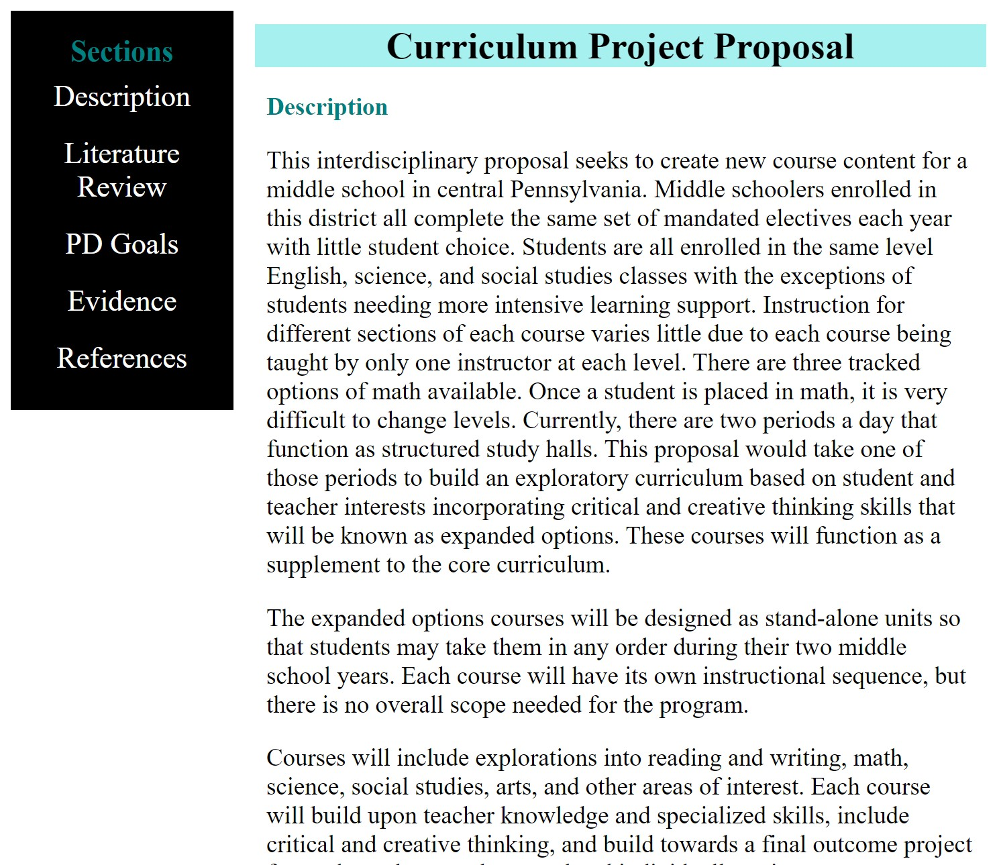
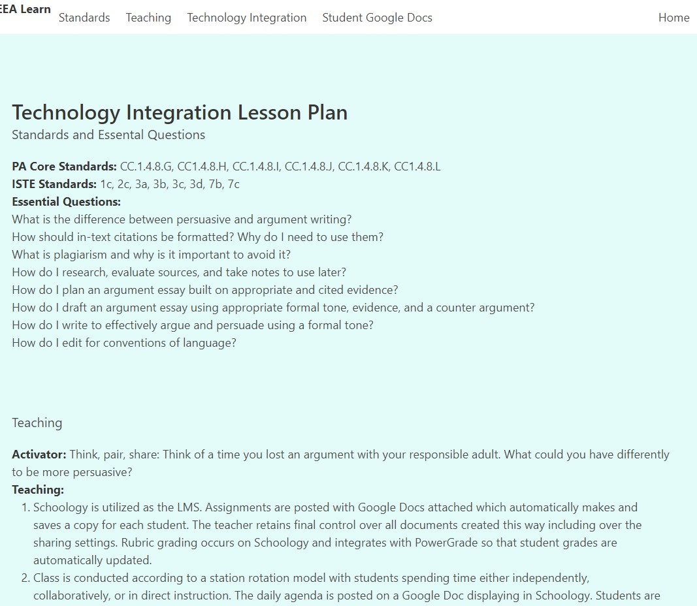
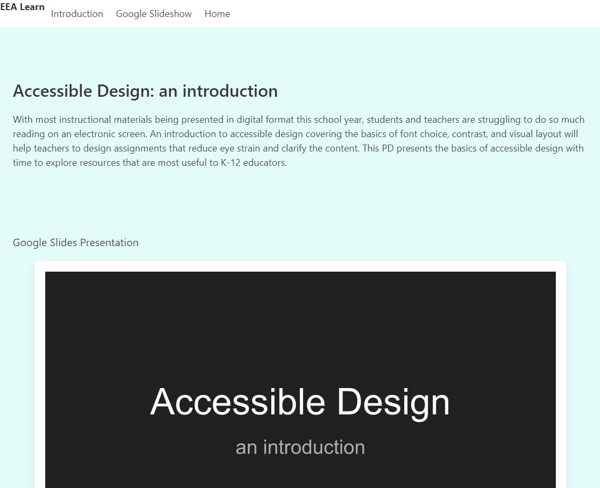
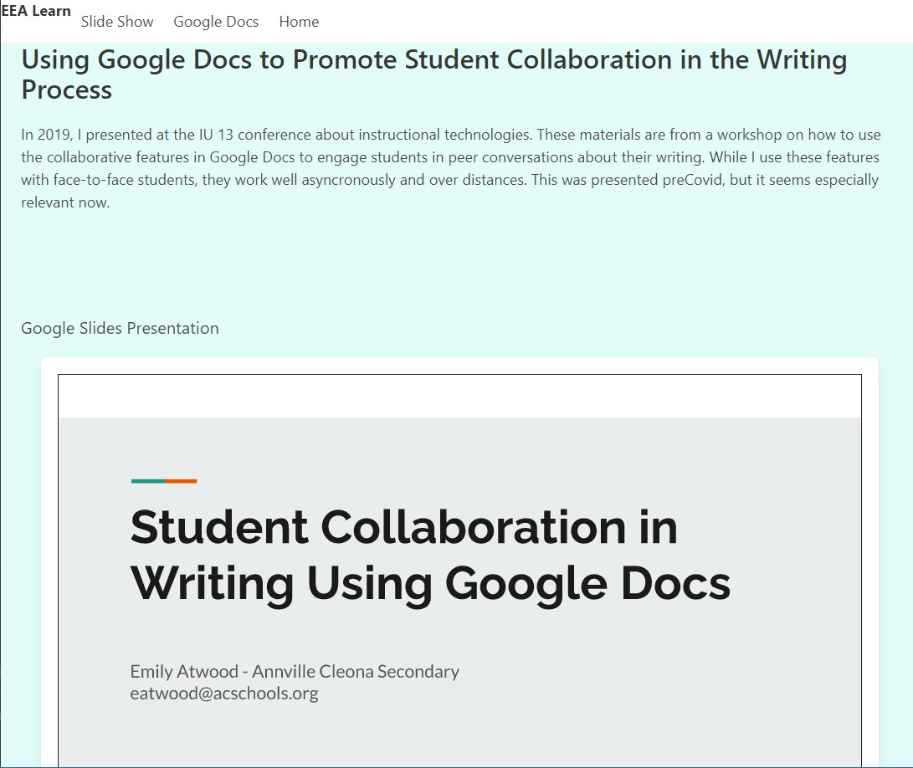

As an educator with 18 years of experience, I am working to grow my skills in curriculum development and educational leadership.
I have a wide variety of experiences in K-12 with special education, gifted education, ELA, PBIS, restorative practices, providing professional development, and as a team lead. During my doctoral program in curriculum and instruction, I have become an expert in pedagogy and how to effectively structure learning experiences. In order to further develop my ability to create and deliver pedagogical and age-appropriate curriculum, I have recently begun learning to code.
Educational Philosophy
My personal philosphy of education has evolved over the course of my career. I can honestly say that I am not the same teacher I was even five years ago. I'm constantly examining my experiences and adapting my techniques based on new information.
1. Every student is an individual who is inherently worthy of being treated with respect.
2. My respsonsibility is to act in the best interests of the student while respecting the rights of the parent(s).
3. The overall goal of a K-12 education is to enable students to lead a fulfulling life where they critically think about and responsibly interact with society.
Artifacts
This page will collect and hold artifacts of my various skills and interests. As my skills and thoughts evolve, I'll update the relevant information. You can expect, for instance, that the layout of the main site and educational artifacts will evolve.
In the interest of keeping a record of my coding progress, earlier projects will remain as-is while I show my progress with new artifacts.
K-12 Education

Curriculum Design Project Propsal
I proposed and implemented a cross-curricular curriculum design project for middle school students.

Technology Integration Plan
This lesson is one I've taught through several revisions to 8th graders. This plan for one of my doctoral classes describes the role of technology in the course including automated features and how it enhances collaboration.

Accessilble Design: an introduction
This PD is planned for 3/19/2021 and focuses on an immediate need, designing electronic classroom materials that are also accessible. As teachers review materials and revise them for electronic delivery, adjustments can be made to help with so much reading from a pixelated screen.

Conference Presentation
In 2019, preCovid, I presented at a technology conference on how to use Google Docs to faciliate student collaboration during the writing process. While I use(d) it face-to-face, the same process transitions well to distance or asyncronous working.
Students use the documents as a place to collaborate, and the entire record of revisions and comments can be reviewed by the teacher. This is especially helpful when working with middle schoolers on how to be a good revising or editing partner.